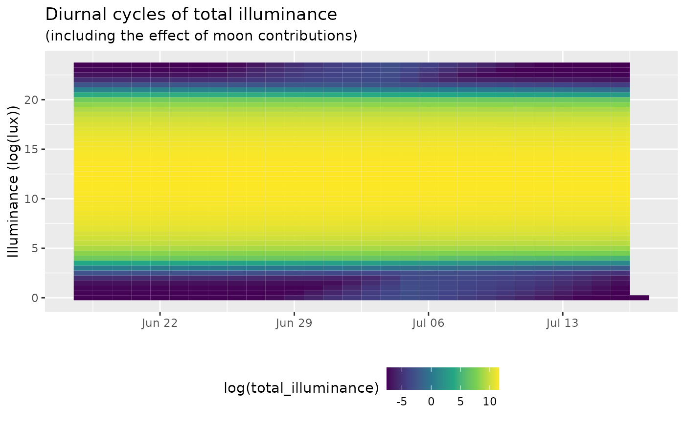

Single date/time and location
skylight values can be calculated for a single point and date using the below call. This will generate a data frame with model values.
# load the library
library(skylight)
# calculate sky illuminance values for
# a single date/time and location
df <- skylight(
-135.8,
-23.4,
as.POSIXct("1986-12-18 21:00:00", tz = "GMT"),
1
)
print(df)
#> sun_azimuth sun_altitude sun_illuminance moon_azimuth moon_altitude
#> 1 346 90 123786.3 282 -62
#> moon_illuminance moon_fraction total_illuminance
#> 1 1.066142e-27 94 123786.3Multiple dates/times and/or locations
The skylight function is vectorized, so you can provide vectors of input parameters instead of using a loop and the above function call.
# Generate a dataset with 15 minute values
# for approximately two months
input <- data.frame(
longitude = 0,
latitude = 50,
date = as.POSIXct("2020-06-18 00:00:00", tz = "GMT") + seq(0, 60*24*3600, 900),
sky_conditions = 1
)
# calculate sky illuminance values for
# a single date/time and location
df <- skylight(
input$longitude,
input$latitude,
input$date,
1
)
print(head(df))
#> sun_azimuth sun_altitude sun_illuminance moon_azimuth moon_altitude
#> 1 360 -17 2.872734e-05 40 -18
#> 2 3 -17 3.076232e-05 43 -17
#> 3 7 -16 3.874383e-05 46 -15
#> 4 10 -16 5.733049e-05 49 -13
#> 5 14 -15 9.949008e-05 52 -11
#> 6 17 -15 2.019566e-04 55 -9
#> moon_illuminance moon_fraction total_illuminance
#> 1 7.503453e-14 11 0.0005287273
#> 2 4.008330e-13 11 0.0005307623
#> 3 2.407014e-12 11 0.0005387438
#> 4 1.611058e-11 10 0.0005573305
#> 5 1.189855e-10 10 0.0005994902
#> 6 9.575228e-10 10 0.0007019576
# previous results are of the same dimension (rows)
# as the input data and can be bound together
# for easy plotting
input <- cbind(input, df)
library(ggplot2)
ggplot(input) +
geom_tile(
aes(
as.Date(date),
as.numeric(format(date, "%H")) + as.numeric(format(date, "%M"))/60,
fill = log(total_illuminance)
)
) +
scale_fill_viridis_c() +
labs(
title = "Diurnal cycles of total illuminance",
subtitle = "(including the effect of moon contributions)",
y = "Illuminance (log(lux))",
x = ""
) +
theme(
legend.position = "bottom"
)